PROJECT 07
Perancangan dan pembuatan catu daya DC dengan beberapa pilihan tegangan keluaran tetap dan variabel untuk memenuhi kebutuhan suplai daya pada modul laboratorium.
01
Project ini membahas perancangan dan pembuatan catu daya DC dengan beberapa pilihan tegangan keluaran untuk kebutuhan modul laboratorium. Sistem dirancang untuk menyediakan tegangan DC tetap maupun variabel sesuai kebutuhan beban elektronik.
Catu daya menggunakan transformator untuk menurunkan tegangan AC, kemudian rangkaian dioda bridge dan kapasitor untuk proses penyearahan dan perataan tegangan. Tahap regulator digunakan untuk menghasilkan pilihan tegangan keluaran sesuai rancangan.
Pilihan output mencakup +5V, -5V, +12V, -12V, serta keluaran variabel pada rentang +1,25V hingga +20V dan -1,25V hingga -20V. Arus keluaran yang ditargetkan adalah hingga 3A.
02
Merancang dan membuat catu daya DC dengan keluaran tetap -5V, +5V, -12V, dan +12V, serta keluaran variabel ±1,25V hingga ±20V dengan arus keluaran hingga 3A.
Melakukan pengujian dan evaluasi terhadap catu daya yang dibuat untuk meninjau kinerja dan kesesuaian keluaran dengan rancangan.
Menghasilkan catu daya yang dapat digunakan untuk memenuhi kebutuhan suplai beban pada modul laboratorium.
03
Secara umum, sistem menerima masukan 220V AC. Tegangan masukan diturunkan oleh transformator, kemudian disearahkan melalui dioda bridge dan diratakan menggunakan kapasitor. Tegangan DC selanjutnya diteruskan ke rangkaian regulator untuk menyediakan beberapa pilihan output.
Rangkaian dibagi menjadi tiga kelompok skematik berdasarkan jenis output, yaitu rangkaian output tetap ±5V, rangkaian output tetap ±12V, dan rangkaian output variabel positif serta negatif. Diagram blok menunjukkan alur umum dari input, proses, hingga kelompok output.
| Parameter | Spesifikasi |
|---|---|
| Tegangan input | 220V AC |
| Output tetap | +5V, -5V, +12V, -12V DC |
| Output variabel positif | +1,25V hingga +20V DC |
| Output variabel negatif | -1,25V hingga -20V DC |
| Arus keluaran | Hingga 3A |
| Transformator | Penurun tegangan AC |
| Penyearah dan filter | Dioda bridge dan kapasitor 4700 µF |
Komponen yang digunakan dalam rancangan meliputi transformator, dioda bridge, kapasitor 4700 µF, IC regulator, transistor, resistor, potensiometer, fuse, serta komponen pendukung untuk perakitan.
| Komponen | Fungsi Umum |
|---|---|
| Transformator | Menurunkan tegangan AC masukan ke tegangan sekunder sesuai rancangan. |
| Dioda bridge | Menyearahkan tegangan AC menjadi tegangan DC berdenyut. |
| Kapasitor 4700 µF | Meratakan tegangan hasil penyearahan sebelum tahap regulator. |
| IC 7805 dan 7905 | Regulator tegangan tetap +5V dan -5V sesuai jenis IC. |
| IC 7812 dan 7912 | Regulator tegangan tetap +12V dan -12V sesuai jenis IC. |
| LM317 dan LM337 | Regulator yang digunakan pada rangkaian tegangan variabel positif dan negatif. |
| Transistor TIP2955 | Komponen pendukung pada rangkaian keluaran sesuai rancangan. |
| Resistor dan potensiometer | Komponen pendukung untuk pengaturan dan kerja rangkaian regulator. |
| Fuse | Komponen pengaman arus lebih pada rangkaian catu daya. |
04
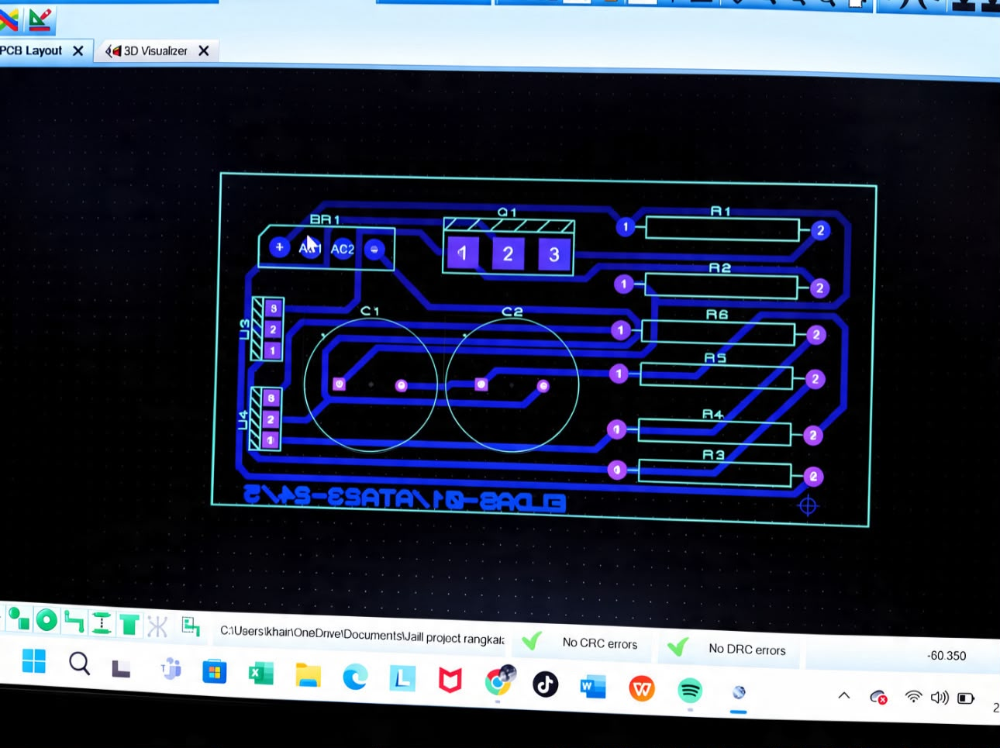
Desain tata letak dan jalur PCB catu daya yang dirancang menggunakan KiCad.
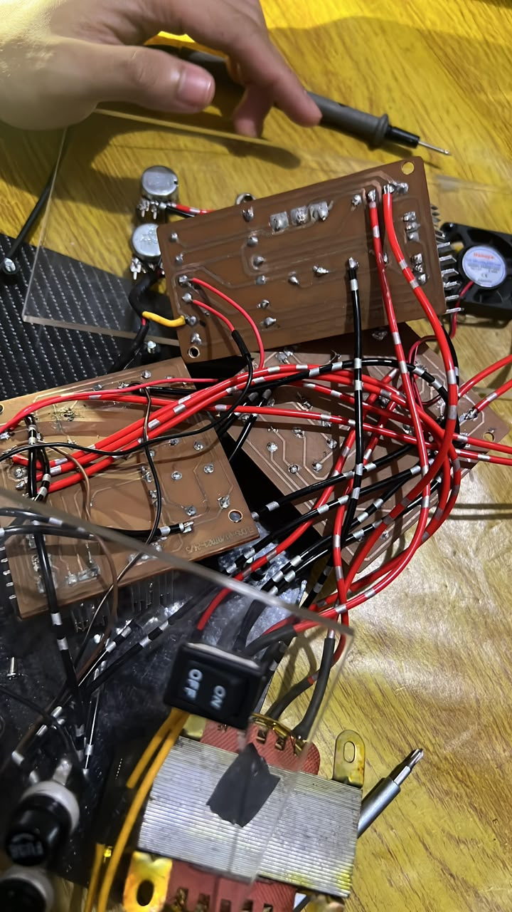
Proses perancangan alat catu daya DC.
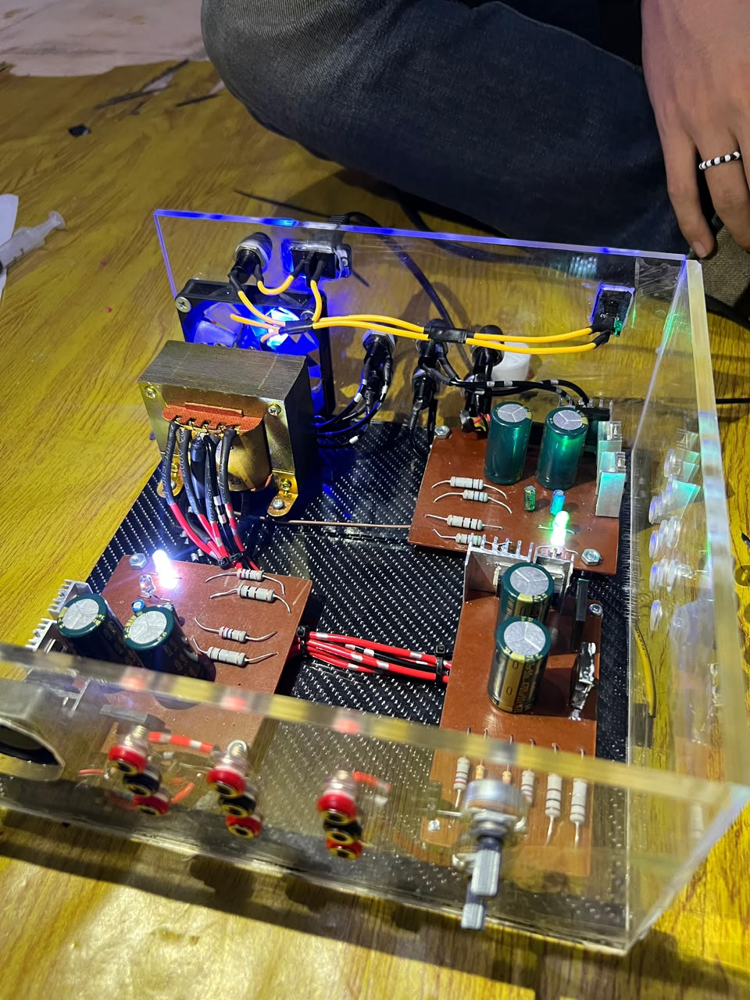
Dokumentasi tahapan perancangan alat.
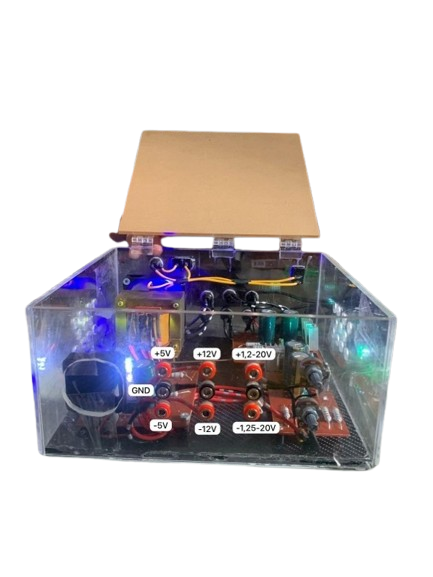
Dokumentasi fisik catu daya DC setelah proses perakitan.
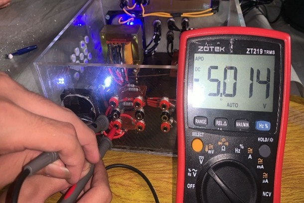
Dokumentasi pengukuran keluaran rangkaian ±5V menggunakan multimeter ZOTEK ZT219.
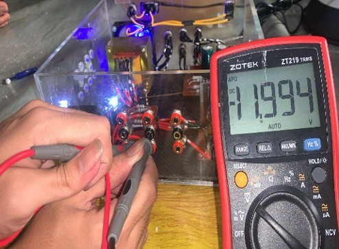
Dokumentasi pengukuran keluaran rangkaian ±12V menggunakan multimeter ZOTEK ZT219.
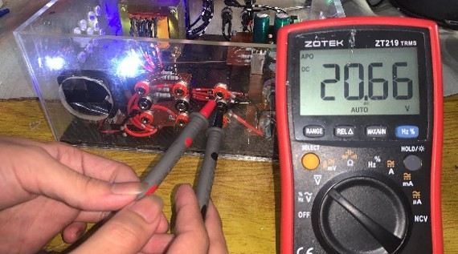
Dokumentasi pengukuran keluaran variabel positif dan negatif menggunakan multimeter ZOTEK ZT219.
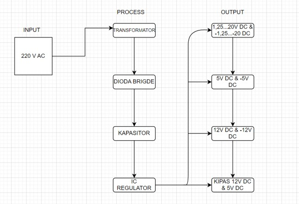
Diagram alur dari input 220V AC melalui tahap proses hingga kelompok output DC.
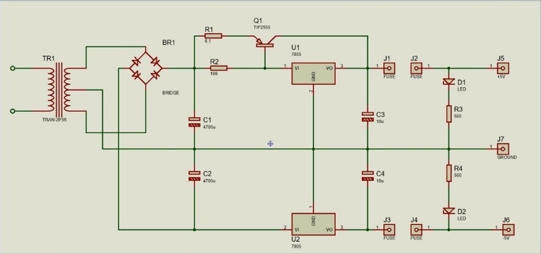
Rangkaian skematik untuk kelompok keluaran tegangan tetap +5V dan -5V.
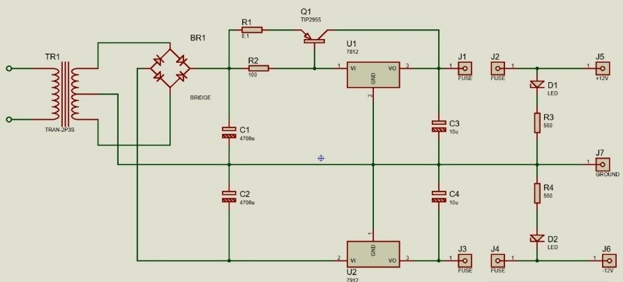
Rangkaian skematik untuk kelompok keluaran tegangan tetap +12V dan -12V.
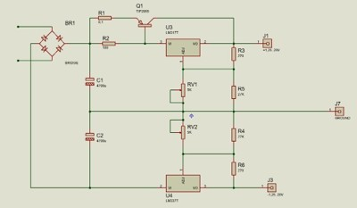
Rangkaian skematik untuk pengaturan keluaran tegangan variabel positif dan negatif.
05
Implementasi dilakukan dengan merangkai komponen utama dan pendukung sesuai rancangan catu daya. Rangkaian terdiri atas tahap penurunan tegangan, penyearahan, perataan, dan pengaturan tegangan keluaran.
Kelompok regulator tetap menyediakan pilihan tegangan +5V, -5V, +12V, dan -12V. Sementara itu, regulator variabel digunakan untuk menyediakan rentang tegangan positif dan negatif sesuai spesifikasi rancangan.
Rangkaian juga menggunakan komponen pendukung seperti resistor, potensiometer, fuse, sakelar, lampu indikator, jack, plug, PCB, dan kabel sebagai bagian dari sistem.
06
Pengujian dilakukan untuk mengevaluasi keluaran catu daya dan meninjau kesesuaiannya dengan spesifikasi rancangan. Pemeriksaan mencakup pilihan tegangan tetap, rentang tegangan variabel, serta kemampuan sistem dalam menyuplai beban.
Data hasil pengukuran aktual dapat ditambahkan pada bagian hasil pengujian apabila tersedia, termasuk kondisi beban dan alat ukur yang digunakan.
Memeriksa keluaran tegangan tetap +5V dan -5V sesuai spesifikasi rancangan.
Memeriksa keluaran tegangan tetap +12V dan -12V sesuai spesifikasi rancangan.
Memeriksa rentang keluaran variabel positif dan negatif sesuai spesifikasi rancangan.
Mengevaluasi kemampuan catu daya dalam memberikan suplai kepada beban yang diuji.
07
Berdasarkan ringkasan hasil penelitian, catu daya DC yang dirancang mampu menyediakan pilihan tegangan keluaran untuk kebutuhan sistem elektronik. Keluaran yang beragam ditujukan untuk mendukung penggunaan pada modul laboratorium dan berbagai kebutuhan beban.
Rancangan menargetkan arus keluaran hingga 3A. Nilai pengukuran per output, kondisi beban, dan hasil uji stabilitas tidak dicantumkan pada ringkasan ini, sehingga tabel pengukuran rinci dapat ditambahkan setelah data pengujian tersedia.
| Kelompok Output | Rentang / Nilai Rancangan |
|---|---|
| Tegangan tetap positif | +5V dan +12V DC |
| Tegangan tetap negatif | -5V dan -12V DC |
| Tegangan variabel positif | +1,25V hingga +20V DC |
| Tegangan variabel negatif | -1,25V hingga -20V DC |
| Arus keluaran target | Hingga 3A |
08
Project DC Power Supply berfokus pada perancangan dan pembuatan catu daya dengan beberapa pilihan output tetap dan variabel. Sistem menggunakan transformator, dioda bridge, kapasitor, dan regulator untuk menghasilkan suplai DC bagi kebutuhan modul laboratorium.
Menyediakan output tetap +5V, -5V, +12V, dan -12V DC.
Menyediakan keluaran variabel positif dan negatif pada rentang ±1,25V hingga ±20V sesuai rancangan.
Menggunakan tahap penyearahan, perataan, dan regulator untuk menyediakan keluaran DC.
Dirancang untuk memenuhi kebutuhan suplai daya berbagai beban pada modul laboratorium.